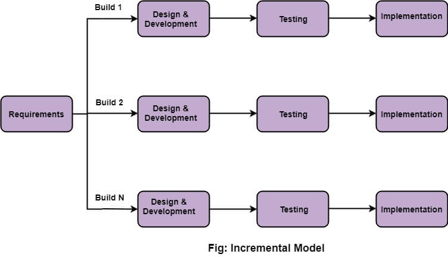

What is the Incremental Model?
Incremental Model is a process of software development where requirements divided into multiple standalone modules of the software development cycle. In this model, each module goes through the requirements, design, implementation and testing phases. Every subsequent release of the module adds function to the previous release. The process continues until the complete system achieved
Phases in Incremental Model
- Requirements Analysis: In the first phase of the incremental model, the product analysis expertise identifies the requirements. And the system functional requirements are understood by the requirement analysis team. To develop the software under the incremental model, this phase performs a crucial role.
- Design & Development: In this phase of the Incremental model of SDLC, the design of the system functionality and the development method are finished with success. When software develops new practicality, the incremental model uses style and development phase.
- Testing: In the incremental model, the testing phase checks the performance of each existing function as well as additional functionality. In the testing phase, the various methods are used to test the behavior of each task.
- Implementation: Implementation phase enables the coding phase of the development system. It involves the final coding that design in the designing and development phase and tests the functionality in the testing phase. After completion of this phase, the number of the product working is enhanced and upgraded up to the final system product

Advantages of the Incremental Model
- Errors are easy to be recognized
- Easier to test and debug
- More flexible.
- Simple to manage risk because it handled during its iteration.
- The Client gets important functionality early.
Disadvantages of the Incremental Model
- Because of its continuous iterations the cost increases.
- Issues may arise from the system design if all needs are not gathered upfront throughout the duration of the program lifecycle
- The client may not see the product until the end of the project
- It takes a lot of time and effort to fix an issue in one unit if it needs to be corrected in all the units.
Example of Incremental Model
Let's say we're building a social media platform:
Each iteration delivers a functional piece of the platform, gradually building upon the previous increments to create a fully-featured social media platform.